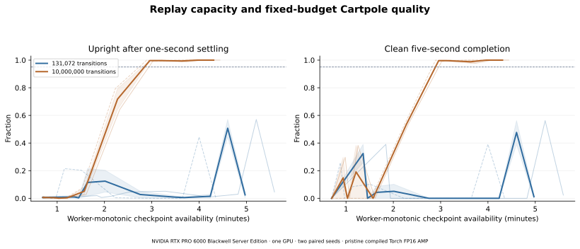
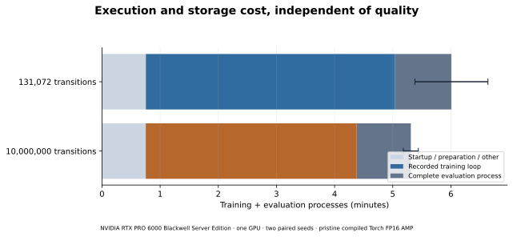

Controlled pilot · 26 October 2026
Pristine official Torch FlashSAC, two capacities, two paired seeds, one GPU allocation.
131,072 transitions: 0/2 final gate passes; 0/2 passed at both 900 and 1000. Mean final settled upright time was 2.51%.
10,000,000 transitions: 2/2 final gate passes; 2/2 passed at both 900 and 1000. Mean final settled upright time was 100.00%.
This is a bounded descriptive pilot. Capacity is the only configured treatment; neither improvement nor quality equivalence is assumed.
The previous 10,000-iteration study showed temporary balancing followed by regressions. Replay capacity was an unconfirmed explanation for that instability, which motivated this capacity-only pilot.
Four fresh 1,000-iteration runs, 1,024 worlds and 16 steps/iteration: 16,384,000 transitions/run. Only replay capacity changes: 131,072 versus 10,000,000. The latter first fills at iteration 611; evaluations 600/650 bracket this. All 44 common evaluations use the same 128 original states and permanently masked first episodes. The frozen gate requires 95% clean five-second completion and 95% upright time within 0.2 rad after one-second settling. Survival alone is not balancing.
| Capacity | Seed | First gate | Ever gate | Best iteration | Best upright | Final gate | Gate 900 & 1000 | Final full upright | Final completion | Angle RMS | Episode steps |
|---|---|---|---|---|---|---|---|---|---|---|---|
| 131,072 transitions | 0 | Not reached | False | 900 | 57.1% | False | False | 7.9% | 2.3% | 0.873 | 68.6 |
| 10,000,000 transitions | 0 | 600 | True | 900 | 100.0% | True | True | 95.9% | 100.0% | 0.086 | 300.0 |
| 10,000,000 transitions | 1 | 600 | True | 800 | 100.0% | True | True | 96.3% | 100.0% | 0.087 | 300.0 |
| 131,072 transitions | 1 | Not reached | False | 900 | 44.4% | False | False | 1.9% | 0.0% | 1.533 | 54.4 |
Best selects highest saved settled-upright fraction, then completion and earlier-checkpoint ties; it never replaces final or sustained success. All failures and regressions remain visible.


| Capacity | Seed | Loop (s) | Train process (s) | Eval process (s) | Replay export (s) | Continuation MB | Completed/attempted (skips) |
|---|---|---|---|---|---|---|---|
| 131,072 transitions | 0 | 293.94 | 339.77 | 58.46 | 0.06 | 44.2 | actor:15899/15903(4); critic:31797/31806(9); temperature:15903/15903(0) |
| 10,000,000 transitions | 0 | 225.17 | 270.53 | 55.90 | 0.80 | 518.0 | actor:15903/15903(0); critic:31791/31806(15); temperature:15903/15903(0) |
| 10,000,000 transitions | 1 | 209.62 | 254.63 | 56.30 | 0.81 | 518.0 | actor:15902/15903(1); critic:31792/31806(14); temperature:15903/15903(0) |
| 131,072 transitions | 1 | 219.70 | 264.43 | 58.47 | 0.06 | 44.2 | actor:15903/15903(0); critic:31793/31806(13); temperature:15903/15903(0) |
| Scope | Median large/small | Both paired seed ratios |
|---|---|---|
| training loop seconds | 0.8601 | s0: 0.7661, s1: 0.9541 |
| training process seconds | 0.8796 | s0: 0.7962, s1: 0.9629 |
| end to end seconds | 0.8913 | s0: 0.8197, s1: 0.9629 |
Allocation first-smoke through final-evaluation wall: 2006.46s, including all four smokes. Full replay/storage overhead is shown separately and remains nested in the measured totals.
Pristine FlashSAC · Frozen collector · Isaac Lab · Exact protocol · Audited data
FlashSAC by Donghu Kim and coauthors, Holiday Robotics: FlashSAC: Fast and Stable Off-Policy Reinforcement Learning for High-Dimensional Robot Control. Original authorship/licenses remain with the contributors.
Protocol SHA256: d2a0cc072b5a63e3eced658052850e673dae5105fc026d63fc11206e8e0403cb